Coordinates of Vector OperationsBiểu thức tọa độ của các phép toán vectơ
Grade 12 · Topic: Vectors and Coordinates in SpaceLớp 12 · Chủ đề: Vectơ và hệ tọa độ trong không gian
1Lesson IntroductionGiới thiệu bài học
Learning goalsMục tiêu bài học
By the end of this lesson you can:
Sau bài học này, em có thể:
add, subtract and scale vectors by coordinates;
cộng, trừ, nhân vectơ với một số bằng tổng và hiệu theo tọa độ và tích của một số với một vectơ;
compute the dot product and the length;
tính biểu thức tọa độ của tích vô hướng và độ dài của vectơ (tọa độ);
find the angle and decide if vectors are perpendicular;
tìm góc giữa hai vectơ bằng tọa độ và nhận biết hai vectơ vuông góc;
decide if two vectors are collinear and solve for a parameter \(m\).
nhận biết hai vectơ cùng phương và tìm tham số \(m\).
2Mathematical VocabularyTừ vựng Toán học
sum and difference by coordinates – add or subtract the vectors coordinate by coordinate.
tổng và hiệu theo tọa độ – cộng hoặc trừ các vectơ theo từng tọa độ.
scalar multiple – multiply every coordinate by the same number.
tích của một số với một vectơ – nhân mọi tọa độ với cùng một số.
dot product by coordinates – multiply matching coordinates and add: \(x_1x_2+y_1y_2+z_1z_2\).
biểu thức tọa độ của tích vô hướng – nhân các tọa độ tương ứng rồi cộng: \(x_1x_2+y_1y_2+z_1z_2\).
length of a vector – the square root of the sum of the squares of the coordinates.
độ dài của vectơ (tọa độ) – căn bậc hai của tổng bình phương các tọa độ.
angle between two vectors – found from \(\cos\theta=\dfrac{\vec a\cdot\vec b}{|\vec a||\vec b|}\).
góc giữa hai vectơ bằng tọa độ – tính từ \(\cos\theta=\dfrac{\vec a\cdot\vec b}{|\vec a||\vec b|}\).
perpendicular vectors – vectors whose dot product is 0.
hai vectơ vuông góc – hai vectơ có tích vô hướng bằng 0.
collinear vectors – vectors with \(\vec b=k\vec a\).
hai vectơ cùng phương – hai vectơ \(\vec a\) và \(\vec b\) với \(\vec b=k\vec a\).
3Useful English PhrasesCụm từ tiếng Anh thường gặp
Find the coordinates of the vector.
Tìm tọa độ của vectơ.
Find the value of \(m\) so that the vectors are perpendicular.
Tìm \(m\) để hai vectơ vuông góc.
Find the cosine of the angle.
Tìm côsin của góc.
The two vectors are collinear.
Hai vectơ cùng phương.
Calculate the length of the vector.
Tính độ dài của vectơ.
4Prerequisite ReviewÔn tập kiến thức nền
Last lesson: \(\overrightarrow{AB}=B-A\) and \(AB=\sqrt{(\Delta x)^2+(\Delta y)^2+(\Delta z)^2}\). Today we do the same with any vectors \(\vec a=(x_1;y_1;z_1)\), \(\vec b=(x_2;y_2;z_2)\).
Bài trước: \(\overrightarrow{AB}=B-A\) và \(AB=\sqrt{(\Delta x)^2+(\Delta y)^2+(\Delta z)^2}\). Hôm nay ta làm tương tự với vectơ bất kỳ \(\vec a=(x_1;y_1;z_1)\), \(\vec b=(x_2;y_2;z_2)\).
5TheoryLý thuyết
5.1 Sum, difference, scalar multipleTổng, hiệu, tích với một số
RulesQuy tắc
\(\vec a\pm\vec b=(x_1\pm x_2;\,y_1\pm y_2;\,z_1\pm z_2)\).
\(\vec a\pm\vec b=(x_1\pm x_2;\,y_1\pm y_2;\,z_1\pm z_2)\).
\(k\vec a=(kx_1;\,ky_1;\,kz_1)\).
\(k\vec a=(kx_1;\,ky_1;\,kz_1)\).
\(\vec b\) and \(\vec a\ne\vec 0\) are collinear \(\iff\vec b=k\vec a\) for some \(k\).
\(\vec b\) và \(\vec a\ne\vec 0\) cùng phương \(\iff\vec b=k\vec a\) với một số \(k\).
5.2 Dot product, length, angleTích vô hướng, độ dài, góc
FormulasCông thức
\(\vec a\cdot\vec b=x_1x_2+y_1y_2+z_1z_2\).
\(\vec a\cdot\vec b=x_1x_2+y_1y_2+z_1z_2\).
\(|\vec a|=\sqrt{x_1^2+y_1^2+z_1^2}\).
\(|\vec a|=\sqrt{x_1^2+y_1^2+z_1^2}\).
\(\cos(\vec a,\vec b)=\dfrac{\vec a\cdot\vec b}{|\vec a||\vec b|}\).
\(\cos(\vec a,\vec b)=\dfrac{\vec a\cdot\vec b}{|\vec a||\vec b|}\).
\(\vec a\perp\vec b\iff\vec a\cdot\vec b=0\).
\(\vec a\perp\vec b\iff\vec a\cdot\vec b=0\).
Watch out!Lưu ý
The dot product is a number, not a vector. A negative dot product means the angle is greater than \(90^\circ\). Collinear is not the same as perpendicular.
Tích vô hướng là một số, không phải vectơ. Tích vô hướng âm nghĩa là góc lớn hơn \(90^\circ\). Cùng phương không phải là vuông góc.
6Worked ExamplesVí dụ có lời giải
ExampleVí dụ 1BasicCơ bản – Combine vectorsKết hợp các vectơ
\(\vec a=(1;2;0)\), \(\vec b=(3;-1;2)\). Find \(2\vec a-\vec b\).
Cho \(\vec a=(1;2;0)\), \(\vec b=(3;-1;2)\). Tính \(2\vec a-\vec b\).
Analysis: Scale first, then subtract coordinate by coordinate.
Phân tích: Nhân trước, rồi trừ từng tọa độ.
\(2\vec a=(2;4;0)\).
\(2\vec a=(2;4;0)\).
\(2\vec a-\vec b=(2-3;\,4+1;\,0-2)\).
\(2\vec a-\vec b=(2-3;\,4+1;\,0-2)\).
\((-1;5;-2)\).
\((-1;5;-2)\).
ExampleVí dụ 2BasicCơ bản – Dot productTích vô hướng
\(\vec a=(2;-1;3)\), \(\vec b=(1;4;2)\). Find \(\vec a\cdot\vec b\).
Cho \(\vec a=(2;-1;3)\), \(\vec b=(1;4;2)\). Tính \(\vec a\cdot\vec b\).
Analysis: Multiply matching coordinates, then add.
Phân tích: Nhân các tọa độ tương ứng rồi cộng.
\(2\cdot1+(-1)\cdot4+3\cdot2=2-4+6\).
\(2\cdot1+(-1)\cdot4+3\cdot2=2-4+6\).
\(\vec a\cdot\vec b=4\).
\(\vec a\cdot\vec b=4\).
ExampleVí dụ 3IntermediateTrung bình – The angleGóc giữa hai vectơ
\(\vec a=(1;2;2)\), \(\vec b=(2;0;0)\). Find \(\cos(\vec a,\vec b)\).
Cho \(\vec a=(1;2;2)\), \(\vec b=(2;0;0)\). Tính \(\cos(\vec a,\vec b)\).
Analysis: Find the dot product and both lengths.
Phân tích: Tìm tích vô hướng và hai độ dài.
\(\vec a\cdot\vec b=2\), \(|\vec a|=3\), \(|\vec b|=2\).
\(\vec a\cdot\vec b=2\), \(|\vec a|=3\), \(|\vec b|=2\).
\(\cos=\dfrac{2}{3\cdot2}\).
\(\cos=\dfrac{2}{3\cdot2}\).
\(\cos(\vec a,\vec b)=\dfrac13\).
\(\cos(\vec a,\vec b)=\dfrac13\).
ExampleVí dụ 4IntermediateTrung bình – Find \(m\)Tìm \(m\)
\(\vec a=(2;1;-1)\), \(\vec b=(1;m;3)\). Find \(m\) so that \(\vec a\perp\vec b\).
Cho \(\vec a=(2;1;-1)\), \(\vec b=(1;m;3)\). Tìm \(m\) để \(\vec a\perp\vec b\).
Analysis: Set the dot product equal to 0.
Phân tích: Cho tích vô hướng bằng 0.
\(2\cdot1+1\cdot m+(-1)\cdot3=0\).
\(2\cdot1+1\cdot m+(-1)\cdot3=0\).
\(m-1=0\).
\(m-1=0\).
\(m=1\).
\(m=1\).
ExampleVí dụ 5AdvancedNâng cao – A force problemBài toán lực
Two forces \(\vec F_1=(2;1;2)\) and \(\vec F_2=(1;4;-2)\) (in newtons) act on a point. Find the size of the total force and the angle between the forces: is it acute, right or obtuse?
Hai lực \(\vec F_1=(2;1;2)\) và \(\vec F_2=(1;4;-2)\) (đơn vị newton) cùng tác dụng lên một điểm. Tìm độ lớn của hợp lực và cho biết góc giữa hai lực là nhọn, vuông hay tù.
Analysis: The total force is the sum. The sign of the dot product tells the angle type.
Phân tích: Hợp lực là tổng hai lực. Dấu của tích vô hướng cho biết loại góc.
\(\vec F_1+\vec F_2=(3;5;0)\), size \(\sqrt{9+25}=\sqrt{34}\approx5.8\ \text{N}\).
\(\vec F_1+\vec F_2=(3;5;0)\), độ lớn \(\sqrt{9+25}=\sqrt{34}\approx5{,}8\ \text{N}\).
\(\vec F_1\cdot\vec F_2=2+4-4=2\gt0\).
\(\vec F_1\cdot\vec F_2=2+4-4=2\gt0\).
Total force \(\sqrt{34}\approx5.8\ \text{N}\); the angle is acute.
Hợp lực \(\sqrt{34}\approx5{,}8\ \text{N}\); góc giữa hai lực là góc nhọn.
7PracticeBài tập luyện tập
A. Multiple ChoiceA. Trắc nghiệm nhiều lựa chọn
\(\vec a=(1;2;0)\), \(\vec b=(3;-1;2)\). Then \(2\vec a-\vec b=\)…
Cho \(\vec a=(1;2;0)\), \(\vec b=(3;-1;2)\). Khi đó \(2\vec a-\vec b=\)…
Answer: a. Work coordinate by coordinate.
Đáp án a. Tính từng tọa độ.
\(\vec u=(2;-1;3)\), \(\vec v=(1;4;2)\). Then \(\vec u\cdot\vec v=\)…
Cho \(\vec u=(2;-1;3)\), \(\vec v=(1;4;2)\). Khi đó \(\vec u\cdot\vec v=\)…
Answer: d. \(x_1x_2+y_1y_2+z_1z_2=4\).
Đáp án d. \(x_1x_2+y_1y_2+z_1z_2=4\).
\(\vec w=(2;-3;6)\). Then \(|\vec w|=\)…
Cho \(\vec w=(2;-3;6)\). Khi đó \(|\vec w|=\)…
Answer: c. \(|\vec w|=\sqrt{49}=7\).
Đáp án c. \(|\vec w|=\sqrt{49}=7\).
\(\vec a=(2;\,m;\,-2)\) and \(\vec b=(-2;\,4;\,n)\) are collinear when…
Hai vectơ \(\vec a=(2;\,m;\,-2)\) và \(\vec b=(-2;\,4;\,n)\) cùng phương khi…
Answer: d. The first coordinates give \(\vec b=-1\,\vec a\). Then \(4=-1\cdot m\Rightarrow m=-4\) and \(n=-1\cdot-2=2\).
Đáp án d. Từ hoành độ: \(\vec b=-1\,\vec a\). Khi đó \(4=-1\cdot m\Rightarrow m=-4\) và \(n=-1\cdot-2=2\).
A constant force \(\vec F=(-2;\,-5;\,-2)\) (N) moves a box in a straight line from \(A(4;\,3;\,5)\) to \(B(3;\,2;\,4)\) (meters, see the figure). The work \(W=\vec F\cdot\overrightarrow{AB}\) (J) is…
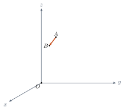
Một lực không đổi \(\vec F=(-2;\,-5;\,-2)\) (N) làm một thùng hàng di chuyển thẳng từ \(A(4;\,3;\,5)\) đến \(B(3;\,2;\,4)\) (đơn vị mét, xem hình). Công \(W=\vec F\cdot\overrightarrow{AB}\) (J) bằng…
Answer: d. \(\overrightarrow{AB}=(-1;\,-1;\,-1)\), \(W=(-2)\cdot(-1)+(-5)\cdot(-1)+(-2)\cdot(-1)=9\).
Đáp án d. \(\overrightarrow{AB}=(-1;\,-1;\,-1)\), \(W=(-2)\cdot(-1)+(-5)\cdot(-1)+(-2)\cdot(-1)=9\).
\(\vec a=(3;\,1;\,-1)\), \(\vec b=(2;\,-1;\,-1)\), \(\vec c=(-3;\,4;\,2)\) (see the figure). The numbers \(x\), \(y\) with \(\vec c=x\vec a+y\vec b\) are…
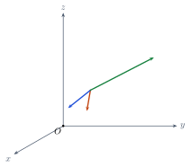
Orange: \(\vec a\); blue: \(\vec b\); green: \(\vec c\).
Cho \(\vec a=(3;\,1;\,-1)\), \(\vec b=(2;\,-1;\,-1)\), \(\vec c=(-3;\,4;\,2)\) (xem hình). Các số \(x\), \(y\) thỏa mãn \(\vec c=x\vec a+y\vec b\) là…
Cam: \(\vec a\); xanh dương: \(\vec b\); xanh lá: \(\vec c\).
Answer: c. From the first two coordinates: \(3x+2y=-3\), \(1x-1y=4\Rightarrow x=1,\ y=-3\); check the third: \(-1\cdot1-1\cdot-3=2\).
Đáp án c. Từ hai tọa độ đầu: \(3x+2y=-3\), \(1x-1y=4\Rightarrow x=1,\ y=-3\); kiểm tra tọa độ thứ ba: \(-1\cdot1-1\cdot-3=2\).
B. True or FalseB. Đúng hoặc sai
\(\vec p=(1;-2;3)\) and \(\vec q=(2;-4;6)\) are collinear.
Hai vectơ \(\vec p=(1;-2;3)\) và \(\vec q=(2;-4;6)\) cùng phương.
Collinear means \(\vec q=k\vec p\): all three ratios must be equal.
Cùng phương nghĩa là \(\vec q=k\vec p\): cả ba tỉ số phải bằng nhau.
\(\vec e=(1;2;2)\) and \(\vec f=(2;-2;1)\) are perpendicular.
Hai vectơ \(\vec e=(1;2;2)\) và \(\vec f=(2;-2;1)\) vuông góc.
Check whether \(\vec e\cdot\vec f=0\) is 0.
Kiểm tra \(\vec e\cdot\vec f=0\) có bằng 0 không.
Two Wi-Fi routers are at \(A(1;\,1;\,4)\) and \(B(0;\,4;\,4)\) (meters) and a laptop is at \(M(2;\,4;\,0)\) (see the figure). The laptop is closer to the router at \(A\).
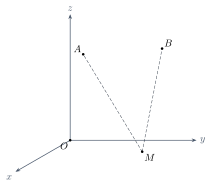
Hai bộ phát Wi-Fi đặt tại \(A(1;\,1;\,4)\) và \(B(0;\,4;\,4)\) (đơn vị mét), một máy tính xách tay ở \(M(2;\,4;\,0)\) (xem hình). Máy tính ở gần bộ phát \(A\) hơn.
\(MA^2=26\), \(MB^2=20\), so \(M\) is closer to \(B\). The statement is false.
\(MA^2=26\), \(MB^2=20\), nên \(M\) gần \(B\) hơn. Mệnh đề sai.
C. Short AnswerC. Trả lời ngắn
\(\vec g=(1;2;2)\), \(\vec h=(4;3;m)\). Find \(m\) so that \(\vec g\perp\vec h\).
Cho \(\vec g=(1;2;2)\), \(\vec h=(4;3;m)\). Tìm \(m\) để \(\vec g\perp\vec h\).
Enter a number.
Nhập một số.
\(\vec g\cdot\vec h=0\) gives \(m=-5\).
\(\vec g\cdot\vec h=0\) cho \(m=-5\).
Points \(P(4;2;5)\) and \(Q(2;-1;-1)\). Find \(|\overrightarrow{PQ}|\).
Cho \(P(4;2;5)\), \(Q(2;-1;-1)\). Tính \(|\overrightarrow{PQ}|\).
Enter a number.
Nhập một số.
\(\overrightarrow{PQ}=Q-P\), so \(|\overrightarrow{PQ}|=7\).
\(\overrightarrow{PQ}=Q-P\) nên \(|\overrightarrow{PQ}|=7\).
Two straight pipes leave the same point in the directions \(\vec u=(-1;\,4;\,4)\) and \(\vec v=(2;\,-4;\,2)\) (see the figure). Find the angle between \(\vec u\) and \(\vec v\) in degrees, rounded to the nearest degree.
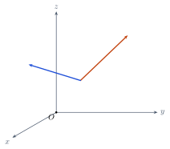
Orange: \(\vec u\); blue: \(\vec v\).
Hai đường ống thẳng xuất phát từ cùng một điểm theo hướng \(\vec u=(-1;\,4;\,4)\) và \(\vec v=(2;\,-4;\,2)\) (xem hình). Tính góc giữa \(\vec u\) và \(\vec v\) theo độ (làm tròn đến hàng đơn vị).
Cam: \(\vec u\); xanh dương: \(\vec v\).
Enter a whole number of degrees.
Nhập số độ (số nguyên).
\(\cos(\vec u,\vec v)=\dfrac{-10}{\sqrt{33}\cdot\sqrt{24}}\approx-0.3553\), so the angle \(\approx111^\circ\).
\(\cos(\vec u,\vec v)=\dfrac{-10}{\sqrt{33}\cdot\sqrt{24}}\approx-0{,}3553\), nên góc \(\approx111^\circ\).
D. Self-practice: Multiple ChoiceD. Tự luyện: trắc nghiệm
The angle between \(\vec a=(0;\,1;\,1)\) and \(\vec b=(0;\,0;\,-3)\) is…
Góc giữa hai vectơ \(\vec a=(0;\,1;\,1)\) và \(\vec b=(0;\,0;\,-3)\) bằng…
Answer: b. \(\cos=\dfrac{-3}{\sqrt{2}\cdot\sqrt{9}}\), whose square is \(\dfrac{1}{2}\); the angle is \(135^\circ\).
Đáp án b. \(\cos=\dfrac{-3}{\sqrt{2}\cdot\sqrt{9}}\), bình phương bằng \(\dfrac{1}{2}\); góc bằng \(135^\circ\).
The rectangular box \(OABC.O'A'B'C'\) has \(O\) at the origin and \(B'(2;\,3;\,4)\) (see the figure). Then \(\overrightarrow{OB'}\cdot\overrightarrow{CA'}=\)…
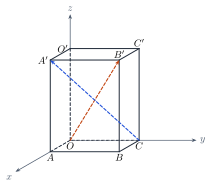
Hình hộp chữ nhật \(OABC.O'A'B'C'\) có \(O\) là gốc tọa độ và \(B'(2;\,3;\,4)\) (xem hình). Khi đó \(\overrightarrow{OB'}\cdot\overrightarrow{CA'}=\)…
Answer: b. \(\overrightarrow{OB'}=(2;\,3;\,4)\), \(\overrightarrow{CA'}=(2;\,-3;\,4)\), dot product \(11\).
Đáp án b. \(\overrightarrow{OB'}=(2;\,3;\,4)\), \(\overrightarrow{CA'}=(2;\,-3;\,4)\), tích vô hướng bằng \(11\).
\(\vec a=(m;-6;-6)\) with \(m\gt0\) and \(|\vec a|=11\). Then \(m=\)…
Cho \(\vec a=(m;-6;-6)\) với \(m\gt0\) và \(|\vec a|=11\). Khi đó \(m=\)…
Answer: c. \(m^2+36+36=121\Rightarrow m^2=49\Rightarrow m=7\).
Đáp án c. \(m^2+36+36=121\Rightarrow m^2=49\Rightarrow m=7\).
\(\vec b\) has the opposite direction to \(\vec a=(-4;\,3;\,12)\) and \(|\vec b|=26\). Then \(\vec b=\)…
Vectơ \(\vec b\) ngược hướng với \(\vec a=(-4;\,3;\,12)\) và \(|\vec b|=26\). Khi đó \(\vec b=\)…
Answer: a. \(|\vec a|=13\), so \(\vec b=-2\vec a=(8;\,-6;\,-24)\).
Đáp án a. \(|\vec a|=13\), nên \(\vec b=-2\vec a=(8;\,-6;\,-24)\).
\(\vec a=(3;m;2)\), \(\vec b=(-1;\,-1;\,3)\). The angle between \(\vec a\) and \(\vec b\) is obtuse exactly when…
Cho \(\vec a=(3;m;2)\), \(\vec b=(-1;\,-1;\,3)\). Góc giữa \(\vec a\) và \(\vec b\) là góc tù khi và chỉ khi…
Answer: b. Obtuse \(\Leftrightarrow\vec a\cdot\vec b\lt0\) (the vectors are never collinear here): \(3-1m\lt0\Leftrightarrow m\gt 3\).
Đáp án b. Góc tù \(\Leftrightarrow\vec a\cdot\vec b\lt0\) (ở đây hai vectơ không thể cùng phương): \(3-1m\lt0\Leftrightarrow m\gt 3\).
\(\vec a+\vec b=(10;\,-1;\,3)\) and \(\vec a-\vec b=(0;\,-1;\,3)\). Then \(\vec b=\)…
Cho \(\vec a+\vec b=(10;\,-1;\,3)\) và \(\vec a-\vec b=(0;\,-1;\,3)\). Khi đó \(\vec b=\)…
Answer: a. Add or subtract the two equalities: \(\vec a=\dfrac{(10;\,-1;\,3)+(0;\,-1;\,3)}{2}=(5;\,-1;\,3)\), \(\vec b=(5;\,0;\,0)\).
Đáp án a. Cộng hoặc trừ hai đẳng thức: \(\vec a=\dfrac{(10;\,-1;\,3)+(0;\,-1;\,3)}{2}=(5;\,-1;\,3)\), \(\vec b=(5;\,0;\,0)\).
A drone hovers still under three forces \(\vec F_1=(0;\,4;\,-5)\), \(\vec F_2=(4;\,-4;\,-2)\) and \(\vec F_3\) (newtons). Then \(\vec F_3=\)…
Một drone đứng yên dưới tác dụng của ba lực \(\vec F_1=(0;\,4;\,-5)\), \(\vec F_2=(4;\,-4;\,-2)\) và \(\vec F_3\) (đơn vị N). Khi đó \(\vec F_3=\)…
Answer: b. Standing still: \(\vec F_1+\vec F_2+\vec F_3=\vec0\Rightarrow\vec F_3=-(\vec F_1+\vec F_2)=(-4;\,0;\,7)\).
Đáp án b. Đứng yên: \(\vec F_1+\vec F_2+\vec F_3=\vec0\Rightarrow\vec F_3=-(\vec F_1+\vec F_2)=(-4;\,0;\,7)\).
\(A(1;\,3;\,3)\), \(B(-1;\,2;\,1)\), \(C(0;\,-1;\,-5)\). Then \(\cos\widehat{BAC}=\)…
Cho \(A(1;\,3;\,3)\), \(B(-1;\,2;\,1)\), \(C(0;\,-1;\,-5)\). Khi đó \(\cos\widehat{BAC}=\)…
Answer: b. \(\overrightarrow{AB}=(-2;\,-1;\,-2)\), \(\overrightarrow{AC}=(-1;\,-4;\,-8)\): \(\cos=\dfrac{22}{3\cdot9}=\dfrac{22}{27}\).
Đáp án b. \(\overrightarrow{AB}=(-2;\,-1;\,-2)\), \(\overrightarrow{AC}=(-1;\,-4;\,-8)\): \(\cos=\dfrac{22}{3\cdot9}=\dfrac{22}{27}\).
A. Multiple ChoiceA. Trắc nghiệm nhiều lựa chọn
\(\vec a=(2;-1;3)\), \(\vec b=(0;4;-2)\). Then \(\vec a+3\vec b=\)…
Cho \(\vec a=(2;-1;3)\), \(\vec b=(0;4;-2)\). Khi đó \(\vec a+3\vec b=\)…
Answer: a. Work coordinate by coordinate.
Đáp án a. Tính từng tọa độ.
\(\vec u=(3;0;-2)\), \(\vec v=(1;5;4)\). Then \(\vec u\cdot\vec v=\)…
Cho \(\vec u=(3;0;-2)\), \(\vec v=(1;5;4)\). Khi đó \(\vec u\cdot\vec v=\)…
Answer: a. \(x_1x_2+y_1y_2+z_1z_2=-5\).
Đáp án a. \(x_1x_2+y_1y_2+z_1z_2=-5\).
\(\vec w=(-4;4;7)\). Then \(|\vec w|=\)…
Cho \(\vec w=(-4;4;7)\). Khi đó \(|\vec w|=\)…
Answer: c. \(|\vec w|=\sqrt{81}=9\).
Đáp án c. \(|\vec w|=\sqrt{81}=9\).
Find \(m\), \(n\) so that \(\vec a=(-4;\,m;\,-1)\) and \(\vec b=(4;\,2;\,n)\) have the same or opposite directions.
Tìm \(m\), \(n\) để hai vectơ \(\vec a=(-4;\,m;\,-1)\) và \(\vec b=(4;\,2;\,n)\) cùng phương.
Answer: b. The first coordinates give \(\vec b=-1\,\vec a\). Then \(2=-1\cdot m\Rightarrow m=-2\) and \(n=-1\cdot-1=1\).
Đáp án b. Từ hoành độ: \(\vec b=-1\,\vec a\). Khi đó \(2=-1\cdot m\Rightarrow m=-2\) và \(n=-1\cdot-1=1\).
A robot arm pushes an object from \(A(3;\,5;\,4)\) to \(B(4;\,6;\,1)\) (m) with a constant force \(\vec F=(2;\,-5;\,-6)\) (N), as in the figure. How much work (J) does the force do?
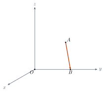
Một cánh tay robot đẩy vật từ \(A(3;\,5;\,4)\) đến \(B(4;\,6;\,1)\) (m) bằng lực không đổi \(\vec F=(2;\,-5;\,-6)\) (N) như hình. Lực thực hiện công bằng bao nhiêu jun?
Answer: c. \(\overrightarrow{AB}=(1;\,1;\,-3)\), \(W=(2)\cdot 1+(-5)\cdot 1+(-6)\cdot(-3)=15\).
Đáp án c. \(\overrightarrow{AB}=(1;\,1;\,-3)\), \(W=(2)\cdot 1+(-5)\cdot 1+(-6)\cdot(-3)=15\).
Given \(\vec a=(-3;\,2;\,2)\), \(\vec b=(-1;\,1;\,-2)\), \(\vec c=(2;\,-1;\,-4)\) (figure), and \(\vec c=x\vec a+y\vec b\). Find \(x+y\).
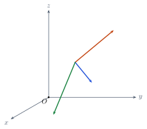
Orange: \(\vec a\); blue: \(\vec b\); green: \(\vec c\).
Cho \(\vec a=(-3;\,2;\,2)\), \(\vec b=(-1;\,1;\,-2)\), \(\vec c=(2;\,-1;\,-4)\) (hình vẽ) và \(\vec c=x\vec a+y\vec b\). Tính \(x+y\).
Cam: \(\vec a\); xanh dương: \(\vec b\); xanh lá: \(\vec c\).
Answer: b. From the first two coordinates: \(-3x-1y=2\), \(2x+1y=-1\Rightarrow x=-1,\ y=1\); check the third: \(2\cdot-1-2\cdot1=-4\). So \(x+y=0\).
Đáp án b. Từ hai tọa độ đầu: \(-3x-1y=2\), \(2x+1y=-1\Rightarrow x=-1,\ y=1\); kiểm tra tọa độ thứ ba: \(2\cdot-1-2\cdot1=-4\). Vậy \(x+y=0\).
B. True or FalseB. Đúng hoặc sai
\(\vec p=(2;1;0)\) and \(\vec q=(6;3;1)\) are collinear.
Hai vectơ \(\vec p=(2;1;0)\) và \(\vec q=(6;3;1)\) cùng phương.
Collinear means \(\vec q=k\vec p\): all three ratios must be equal.
Cùng phương nghĩa là \(\vec q=k\vec p\): cả ba tỉ số phải bằng nhau.
\(\vec e=(3;0;4)\) and \(\vec f=(4;1;3)\) are perpendicular.
Hai vectơ \(\vec e=(3;0;4)\) và \(\vec f=(4;1;3)\) vuông góc.
Check whether \(\vec e\cdot\vec f=24\) is 0.
Kiểm tra \(\vec e\cdot\vec f=24\) có bằng 0 không.
In a library, two signal boosters are placed at \(A(1;\,3;\,5)\), \(B(4;\,2;\,5)\) and a reader sits at \(M(2;\,5;\,0)\) (figure). Then \(M\) is nearer to \(A\) than to the other booster.
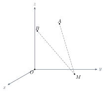
Trong thư viện, hai bộ khuếch đại sóng đặt tại \(A(1;\,3;\,5)\), \(B(4;\,2;\,5)\) và một bạn đọc ngồi ở \(M(2;\,5;\,0)\) (hình vẽ). Khi đó \(M\) gần \(A\) hơn bộ còn lại.
\(MA^2=30\), \(MB^2=38\), so \(M\) is closer to \(A\). The statement is true.
\(MA^2=30\), \(MB^2=38\), nên \(M\) gần \(A\) hơn. Mệnh đề đúng.
C. Short AnswerC. Trả lời ngắn
\(\vec g=(3;-1;2)\), \(\vec h=(1;5;m)\). Find \(m\) so that \(\vec g\perp\vec h\).
Cho \(\vec g=(3;-1;2)\), \(\vec h=(1;5;m)\). Tìm \(m\) để \(\vec g\perp\vec h\).
Enter a number.
Nhập một số.
\(\vec g\cdot\vec h=0\) gives \(m=1\).
\(\vec g\cdot\vec h=0\) cho \(m=1\).
Points \(P(2;0;-1)\) and \(Q(1;-4;-9)\). Find \(|\overrightarrow{PQ}|\).
Cho \(P(2;0;-1)\), \(Q(1;-4;-9)\). Tính \(|\overrightarrow{PQ}|\).
Enter a number.
Nhập một số.
\(\overrightarrow{PQ}=Q-P\), so \(|\overrightarrow{PQ}|=9\).
\(\overrightarrow{PQ}=Q-P\) nên \(|\overrightarrow{PQ}|=9\).
Two steel bars of a roof frame point along \(\vec u=(3;\,4;\,-3)\) and \(\vec v=(1;\,3;\,3)\) (figure). Compute the angle \((\vec u,\vec v)\) (degrees, round to a whole number).
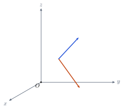
Orange: \(\vec u\); blue: \(\vec v\).
Hai thanh thép của khung mái hướng theo \(\vec u=(3;\,4;\,-3)\) và \(\vec v=(1;\,3;\,3)\) (hình vẽ). Tính góc \((\vec u,\vec v)\) (độ, làm tròn đến số nguyên).
Cam: \(\vec u\); xanh dương: \(\vec v\).
Enter a whole number of degrees.
Nhập số độ (số nguyên).
\(\cos(\vec u,\vec v)=\dfrac{6}{\sqrt{34}\cdot\sqrt{19}}\approx0.2361\), so the angle \(\approx76^\circ\).
\(\cos(\vec u,\vec v)=\dfrac{6}{\sqrt{34}\cdot\sqrt{19}}\approx0{,}2361\), nên góc \(\approx76^\circ\).
D. Self-practice: Multiple ChoiceD. Tự luyện: trắc nghiệm
The angle between \(\vec a=(-1;\,-2;\,3)\) and \(\vec b=(-2;\,3;\,-1)\) is…
Góc giữa hai vectơ \(\vec a=(-1;\,-2;\,3)\) và \(\vec b=(-2;\,3;\,-1)\) bằng…
Answer: d. \(\cos=\dfrac{-7}{\sqrt{14}\cdot\sqrt{14}}\), whose square is \(\dfrac{1}{4}\); the angle is \(120^\circ\).
Đáp án d. \(\cos=\dfrac{-7}{\sqrt{14}\cdot\sqrt{14}}\), bình phương bằng \(\dfrac{1}{4}\); góc bằng \(120^\circ\).
The rectangular box \(OABC.O'A'B'C'\) has \(O\) at the origin and \(B'(4;\,3;\,2)\) (see the figure). Then \(\overrightarrow{A'C}\cdot\overrightarrow{OB}=\)…
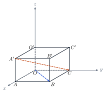
Hình hộp chữ nhật \(OABC.O'A'B'C'\) có \(O\) là gốc tọa độ và \(B'(4;\,3;\,2)\) (xem hình). Khi đó \(\overrightarrow{A'C}\cdot\overrightarrow{OB}=\)…
Answer: b. \(\overrightarrow{A'C}=(-4;\,3;\,-2)\), \(\overrightarrow{OB}=(4;\,3;\,0)\), dot product \(-7\).
Đáp án b. \(\overrightarrow{A'C}=(-4;\,3;\,-2)\), \(\overrightarrow{OB}=(4;\,3;\,0)\), tích vô hướng bằng \(-7\).
\(\vec a=(m;3;-2)\) with \(m\gt0\) and \(|\vec a|=7\). Then \(m=\)…
Cho \(\vec a=(m;3;-2)\) với \(m\gt0\) và \(|\vec a|=7\). Khi đó \(m=\)…
Answer: d. \(m^2+9+4=49\Rightarrow m^2=36\Rightarrow m=6\).
Đáp án d. \(m^2+9+4=49\Rightarrow m^2=36\Rightarrow m=6\).
\(\vec b\) has the opposite direction to \(\vec a=(3;\,-4;\,12)\) and \(|\vec b|=26\). Then \(\vec b=\)…
Vectơ \(\vec b\) ngược hướng với \(\vec a=(3;\,-4;\,12)\) và \(|\vec b|=26\). Khi đó \(\vec b=\)…
Answer: c. \(|\vec a|=13\), so \(\vec b=-2\vec a=(-6;\,8;\,-24)\).
Đáp án c. \(|\vec a|=13\), nên \(\vec b=-2\vec a=(-6;\,8;\,-24)\).
\(\vec a=(1;m;-3)\), \(\vec b=(1;\,2;\,-1)\). The angle between \(\vec a\) and \(\vec b\) is obtuse exactly when…
Cho \(\vec a=(1;m;-3)\), \(\vec b=(1;\,2;\,-1)\). Góc giữa \(\vec a\) và \(\vec b\) là góc tù khi và chỉ khi…
Answer: a. Obtuse \(\Leftrightarrow\vec a\cdot\vec b\lt0\) (the vectors are never collinear here): \(4+2m\lt0\Leftrightarrow m\lt -2\).
Đáp án a. Góc tù \(\Leftrightarrow\vec a\cdot\vec b\lt0\) (ở đây hai vectơ không thể cùng phương): \(4+2m\lt0\Leftrightarrow m\lt -2\).
\(\vec a+\vec b=(8;\,-7;\,6)\) and \(\vec a-\vec b=(-2;\,1;\,-4)\). Then \(\vec a=\)…
Cho \(\vec a+\vec b=(8;\,-7;\,6)\) và \(\vec a-\vec b=(-2;\,1;\,-4)\). Khi đó \(\vec a=\)…
Answer: d. Add or subtract the two equalities: \(\vec a=\dfrac{(8;\,-7;\,6)+(-2;\,1;\,-4)}{2}=(3;\,-3;\,1)\), \(\vec b=(5;\,-4;\,5)\).
Đáp án d. Cộng hoặc trừ hai đẳng thức: \(\vec a=\dfrac{(8;\,-7;\,6)+(-2;\,1;\,-4)}{2}=(3;\,-3;\,1)\), \(\vec b=(5;\,-4;\,5)\).
A drone hovers still under three forces \(\vec F_1=(-8;\,-8;\,-7)\), \(\vec F_2=(6;\,-4;\,2)\) and \(\vec F_3\) (newtons). Then \(\vec F_3=\)…
Một drone đứng yên dưới tác dụng của ba lực \(\vec F_1=(-8;\,-8;\,-7)\), \(\vec F_2=(6;\,-4;\,2)\) và \(\vec F_3\) (đơn vị N). Khi đó \(\vec F_3=\)…
Answer: b. Standing still: \(\vec F_1+\vec F_2+\vec F_3=\vec0\Rightarrow\vec F_3=-(\vec F_1+\vec F_2)=(2;\,12;\,5)\).
Đáp án b. Đứng yên: \(\vec F_1+\vec F_2+\vec F_3=\vec0\Rightarrow\vec F_3=-(\vec F_1+\vec F_2)=(2;\,12;\,5)\).
\(A(-2;\,-1;\,2)\), \(B(-1;\,3;\,-6)\), \(C(-3;\,-3;\,4)\). Then \(\cos\widehat{BAC}=\)…
Cho \(A(-2;\,-1;\,2)\), \(B(-1;\,3;\,-6)\), \(C(-3;\,-3;\,4)\). Khi đó \(\cos\widehat{BAC}=\)…
Answer: c. \(\overrightarrow{AB}=(1;\,4;\,-8)\), \(\overrightarrow{AC}=(-1;\,-2;\,2)\): \(\cos=\dfrac{-25}{9\cdot3}=-\dfrac{25}{27}\).
Đáp án c. \(\overrightarrow{AB}=(1;\,4;\,-8)\), \(\overrightarrow{AC}=(-1;\,-2;\,2)\): \(\cos=\dfrac{-25}{9\cdot3}=-\dfrac{25}{27}\).
A. Multiple ChoiceA. Trắc nghiệm nhiều lựa chọn
\(\vec a=(-2;0;1)\), \(\vec b=(1;1;-1)\). Then \(3\vec a+2\vec b=\)…
Cho \(\vec a=(-2;0;1)\), \(\vec b=(1;1;-1)\). Khi đó \(3\vec a+2\vec b=\)…
Answer: d. Work coordinate by coordinate.
Đáp án d. Tính từng tọa độ.
\(\vec u=(0;2;-1)\), \(\vec v=(5;3;2)\). Then \(\vec u\cdot\vec v=\)…
Cho \(\vec u=(0;2;-1)\), \(\vec v=(5;3;2)\). Khi đó \(\vec u\cdot\vec v=\)…
Answer: d. \(x_1x_2+y_1y_2+z_1z_2=4\).
Đáp án d. \(x_1x_2+y_1y_2+z_1z_2=4\).
\(\vec w=(6;-6;-7)\). Then \(|\vec w|=\)…
Cho \(\vec w=(6;-6;-7)\). Khi đó \(|\vec w|=\)…
Answer: d. \(|\vec w|=\sqrt{121}=11\).
Đáp án d. \(|\vec w|=\sqrt{121}=11\).
The vectors \(\vec a=(-4;\,m;\,4)\), \(\vec b=(-2;\,6;\,n)\) are parallel exactly when…
Hai vectơ \(\vec a=(-4;\,m;\,4)\), \(\vec b=(-2;\,6;\,n)\) cùng phương khi và chỉ khi…
Answer: c. The first coordinates give \(\vec b=\dfrac{1}{2}\,\vec a\). Then \(6=\dfrac{1}{2}\cdot m\Rightarrow m=12\) and \(n=\dfrac{1}{2}\cdot4=2\).
Đáp án c. Từ hoành độ: \(\vec b=\dfrac{1}{2}\,\vec a\). Khi đó \(6=\dfrac{1}{2}\cdot m\Rightarrow m=12\) và \(n=\dfrac{1}{2}\cdot4=2\).
Under the constant force \(\vec F=(-5;\,-5;\,5)\) (N), a cart moves from \(A(5;\,3;\,3)\) to \(B(6;\,2;\,4)\) (m) (figure). Find the work of \(\vec F\) (J).
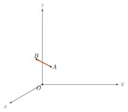
Dưới tác dụng của lực không đổi \(\vec F=(-5;\,-5;\,5)\) (N), một xe đẩy đi từ \(A(5;\,3;\,3)\) đến \(B(6;\,2;\,4)\) (m) (hình vẽ). Tính công của lực \(\vec F\) (J).
Answer: a. \(\overrightarrow{AB}=(1;\,-1;\,1)\), \(W=(-5)\cdot 1+(-5)\cdot(-1)+(5)\cdot 1=5\).
Đáp án a. \(\overrightarrow{AB}=(1;\,-1;\,1)\), \(W=(-5)\cdot 1+(-5)\cdot(-1)+(5)\cdot 1=5\).
Write \(\vec c=(-2;\,-4;\,-1)\) as \(x\vec a+y\vec b\) with \(\vec a=(2;\,-2;\,-2)\), \(\vec b=(2;\,0;\,-1)\) (figure). Then \(x+y=\)…
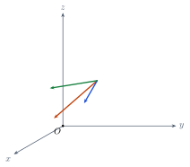
Orange: \(\vec a\); blue: \(\vec b\); green: \(\vec c\).
Biểu diễn \(\vec c=(-2;\,-4;\,-1)\) dưới dạng \(x\vec a+y\vec b\) với \(\vec a=(2;\,-2;\,-2)\), \(\vec b=(2;\,0;\,-1)\) (hình vẽ). Khi đó \(x+y=\)…
Cam: \(\vec a\); xanh dương: \(\vec b\); xanh lá: \(\vec c\).
Answer: b. From the first two coordinates: \(2x+2y=-2\), \(-2x+0y=-4\Rightarrow x=2,\ y=-3\); check the third: \(-2\cdot2-1\cdot-3=-1\). So \(x+y=-1\).
Đáp án b. Từ hai tọa độ đầu: \(2x+2y=-2\), \(-2x+0y=-4\Rightarrow x=2,\ y=-3\); kiểm tra tọa độ thứ ba: \(-2\cdot2-1\cdot-3=-1\). Vậy \(x+y=-1\).
B. True or FalseB. Đúng hoặc sai
\(\vec p=(3;0;-1)\) and \(\vec q=(-6;0;2)\) are collinear.
Hai vectơ \(\vec p=(3;0;-1)\) và \(\vec q=(-6;0;2)\) cùng phương.
Collinear means \(\vec q=k\vec p\): all three ratios must be equal.
Cùng phương nghĩa là \(\vec q=k\vec p\): cả ba tỉ số phải bằng nhau.
\(\vec e=(1;1;1)\) and \(\vec f=(2;-3;1)\) are perpendicular.
Hai vectơ \(\vec e=(1;1;1)\) và \(\vec f=(2;-3;1)\) vuông góc.
Check whether \(\vec e\cdot\vec f=0\) is 0.
Kiểm tra \(\vec e\cdot\vec f=0\) có bằng 0 không.
Lamps hang at \(A(3;\,3;\,4)\) and \(B(4;\,3;\,2)\) above a desk at \(M(3;\,4;\,0)\) (figure). The desk is closer to lamp \(A\).
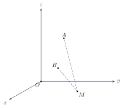
Hai bóng đèn treo tại \(A(3;\,3;\,4)\) và \(B(4;\,3;\,2)\) phía trên một bàn học tại \(M(3;\,4;\,0)\) (hình vẽ). Bàn học gần đèn \(A\) hơn.
\(MA^2=17\), \(MB^2=6\), so \(M\) is closer to \(B\). The statement is false.
\(MA^2=17\), \(MB^2=6\), nên \(M\) gần \(B\) hơn. Mệnh đề sai.
C. Short AnswerC. Trả lời ngắn
\(\vec g=(2;2;-1)\), \(\vec h=(3;-1;m)\). Find \(m\) so that \(\vec g\perp\vec h\).
Cho \(\vec g=(2;2;-1)\), \(\vec h=(3;-1;m)\). Tìm \(m\) để \(\vec g\perp\vec h\).
Enter a number.
Nhập một số.
\(\vec g\cdot\vec h=0\) gives \(m=4\).
\(\vec g\cdot\vec h=0\) cho \(m=4\).
Points \(P(1;1;1)\) and \(Q(3;11;12)\). Find \(|\overrightarrow{PQ}|\).
Cho \(P(1;1;1)\), \(Q(3;11;12)\). Tính \(|\overrightarrow{PQ}|\).
Enter a number.
Nhập một số.
\(\overrightarrow{PQ}=Q-P\), so \(|\overrightarrow{PQ}|=15\).
\(\overrightarrow{PQ}=Q-P\) nên \(|\overrightarrow{PQ}|=15\).
Two laser beams start at one point with directions \(\vec u=(2;\,1;\,2)\), \(\vec v=(2;\,-2;\,2)\) (figure). What is the angle between them, to the nearest degree?
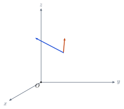
Orange: \(\vec u\); blue: \(\vec v\).
Hai tia laser xuất phát từ một điểm với hướng \(\vec u=(2;\,1;\,2)\), \(\vec v=(2;\,-2;\,2)\) (hình vẽ). Góc giữa hai tia bằng bao nhiêu độ (làm tròn đến độ)?
Cam: \(\vec u\); xanh dương: \(\vec v\).
Enter a whole number of degrees.
Nhập số độ (số nguyên).
\(\cos(\vec u,\vec v)=\dfrac{6}{\sqrt{9}\cdot\sqrt{12}}\approx0.5774\), so the angle \(\approx55^\circ\).
\(\cos(\vec u,\vec v)=\dfrac{6}{\sqrt{9}\cdot\sqrt{12}}\approx0{,}5774\), nên góc \(\approx55^\circ\).
D. Self-practice: Multiple ChoiceD. Tự luyện: trắc nghiệm
The angle between \(\vec a=(1;\,0;\,1)\) and \(\vec b=(-3;\,0;\,0)\) is…
Góc giữa hai vectơ \(\vec a=(1;\,0;\,1)\) và \(\vec b=(-3;\,0;\,0)\) bằng…
Answer: c. \(\cos=\dfrac{-3}{\sqrt{2}\cdot\sqrt{9}}\), whose square is \(\dfrac{1}{2}\); the angle is \(135^\circ\).
Đáp án c. \(\cos=\dfrac{-3}{\sqrt{2}\cdot\sqrt{9}}\), bình phương bằng \(\dfrac{1}{2}\); góc bằng \(135^\circ\).
The rectangular box \(OABC.O'A'B'C'\) has \(O\) at the origin and \(B'(3;\,4;\,2)\) (see the figure). Then \(\overrightarrow{AC'}\cdot\overrightarrow{OB'}=\)…
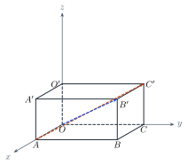
Hình hộp chữ nhật \(OABC.O'A'B'C'\) có \(O\) là gốc tọa độ và \(B'(3;\,4;\,2)\) (xem hình). Khi đó \(\overrightarrow{AC'}\cdot\overrightarrow{OB'}=\)…
Answer: d. \(\overrightarrow{AC'}=(-3;\,4;\,2)\), \(\overrightarrow{OB'}=(3;\,4;\,2)\), dot product \(11\).
Đáp án d. \(\overrightarrow{AC'}=(-3;\,4;\,2)\), \(\overrightarrow{OB'}=(3;\,4;\,2)\), tích vô hướng bằng \(11\).
\(\vec a=(m;6;-2)\) with \(m\gt0\) and \(|\vec a|=7\). Then \(m=\)…
Cho \(\vec a=(m;6;-2)\) với \(m\gt0\) và \(|\vec a|=7\). Khi đó \(m=\)…
Answer: b. \(m^2+36+4=49\Rightarrow m^2=9\Rightarrow m=3\).
Đáp án b. \(m^2+36+4=49\Rightarrow m^2=9\Rightarrow m=3\).
\(\vec b\) has the opposite direction to \(\vec a=(1;\,8;\,4)\) and \(|\vec b|=18\). Then \(\vec b=\)…
Vectơ \(\vec b\) ngược hướng với \(\vec a=(1;\,8;\,4)\) và \(|\vec b|=18\). Khi đó \(\vec b=\)…
Answer: d. \(|\vec a|=9\), so \(\vec b=-2\vec a=(-2;\,-16;\,-8)\).
Đáp án d. \(|\vec a|=9\), nên \(\vec b=-2\vec a=(-2;\,-16;\,-8)\).
\(\vec a=(2;m;-3)\), \(\vec b=(-3;\,-1;\,-3)\). The angle between \(\vec a\) and \(\vec b\) is obtuse exactly when…
Cho \(\vec a=(2;m;-3)\), \(\vec b=(-3;\,-1;\,-3)\). Góc giữa \(\vec a\) và \(\vec b\) là góc tù khi và chỉ khi…
Answer: a. Obtuse \(\Leftrightarrow\vec a\cdot\vec b\lt0\) (the vectors are never collinear here): \(3-1m\lt0\Leftrightarrow m\gt 3\).
Đáp án a. Góc tù \(\Leftrightarrow\vec a\cdot\vec b\lt0\) (ở đây hai vectơ không thể cùng phương): \(3-1m\lt0\Leftrightarrow m\gt 3\).
\(\vec a+\vec b=(2;\,0;\,-7)\) and \(\vec a-\vec b=(-4;\,10;\,-3)\). Then \(\vec b=\)…
Cho \(\vec a+\vec b=(2;\,0;\,-7)\) và \(\vec a-\vec b=(-4;\,10;\,-3)\). Khi đó \(\vec b=\)…
Answer: b. Add or subtract the two equalities: \(\vec a=\dfrac{(2;\,0;\,-7)+(-4;\,10;\,-3)}{2}=(-1;\,5;\,-5)\), \(\vec b=(3;\,-5;\,-2)\).
Đáp án b. Cộng hoặc trừ hai đẳng thức: \(\vec a=\dfrac{(2;\,0;\,-7)+(-4;\,10;\,-3)}{2}=(-1;\,5;\,-5)\), \(\vec b=(3;\,-5;\,-2)\).
A drone hovers still under three forces \(\vec F_1=(-1;\,-4;\,4)\), \(\vec F_2=(1;\,6;\,1)\) and \(\vec F_3\) (newtons). Then \(\vec F_3=\)…
Một drone đứng yên dưới tác dụng của ba lực \(\vec F_1=(-1;\,-4;\,4)\), \(\vec F_2=(1;\,6;\,1)\) và \(\vec F_3\) (đơn vị N). Khi đó \(\vec F_3=\)…
Answer: a. Standing still: \(\vec F_1+\vec F_2+\vec F_3=\vec0\Rightarrow\vec F_3=-(\vec F_1+\vec F_2)=(0;\,-2;\,-5)\).
Đáp án a. Đứng yên: \(\vec F_1+\vec F_2+\vec F_3=\vec0\Rightarrow\vec F_3=-(\vec F_1+\vec F_2)=(0;\,-2;\,-5)\).
\(A(-1;\,0;\,-2)\), \(B(-2;\,4;\,-10)\), \(C(-7;\,-2;\,-5)\). Then \(\cos\widehat{BAC}=\)…
Cho \(A(-1;\,0;\,-2)\), \(B(-2;\,4;\,-10)\), \(C(-7;\,-2;\,-5)\). Khi đó \(\cos\widehat{BAC}=\)…
Answer: d. \(\overrightarrow{AB}=(-1;\,4;\,-8)\), \(\overrightarrow{AC}=(-6;\,-2;\,-3)\): \(\cos=\dfrac{22}{9\cdot7}=\dfrac{22}{63}\).
Đáp án d. \(\overrightarrow{AB}=(-1;\,4;\,-8)\), \(\overrightarrow{AC}=(-6;\,-2;\,-3)\): \(\cos=\dfrac{22}{9\cdot7}=\dfrac{22}{63}\).
8Common MistakesLỗi thường gặp
Forgetting to scale every coordinate. \(2\vec a\) multiplies all three coordinates.
Quên nhân mọi tọa độ. \(2\vec a\) nhân cả ba tọa độ.
Dot product written as a vector. The answer is one number.
Viết tích vô hướng thành vectơ. Kết quả là một số.
Collinear = perpendicular. Collinear needs \(\vec b=k\vec a\); perpendicular needs \(\vec a\cdot\vec b=0\).
Nhầm cùng phương với vuông góc. Cùng phương cần \(\vec b=k\vec a\); vuông góc cần \(\vec a\cdot\vec b=0\).
Dividing by the wrong lengths. In \(\cos\theta\) divide by \(|\vec a||\vec b|\), the product of lengths.
Chia sai khi tính côsin. Trong \(\cos\theta\) chia cho \(|\vec a||\vec b|\), tích hai độ dài.
9Lesson SummaryTổng kết
\(\vec a\pm\vec b\) and \(k\vec a\) are done coordinate by coordinate.
\(\vec a\pm\vec b\) và \(k\vec a\) tính theo từng tọa độ.
\(\vec a\cdot\vec b=x_1x_2+y_1y_2+z_1z_2\); \(|\vec a|=\sqrt{x^2+y^2+z^2}\).
\(\vec a\cdot\vec b=x_1x_2+y_1y_2+z_1z_2\); \(|\vec a|=\sqrt{x^2+y^2+z^2}\).
\(\cos\theta=\dfrac{\vec a\cdot\vec b}{|\vec a||\vec b|}\); \(\vec a\perp\vec b\iff\vec a\cdot\vec b=0\).
\(\cos\theta=\dfrac{\vec a\cdot\vec b}{|\vec a||\vec b|}\); \(\vec a\perp\vec b\iff\vec a\cdot\vec b=0\).
Key English words: dot product, length, collinear, perpendicular.
Từ cần nhớ (chạm vào để xem tiếng Anh): tích vô hướng của hai vectơ; độ dài; thẳng hàng; vuông góc.